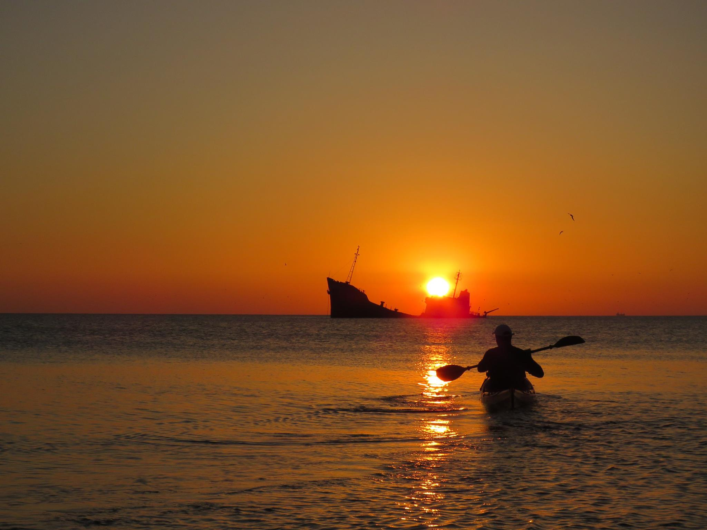
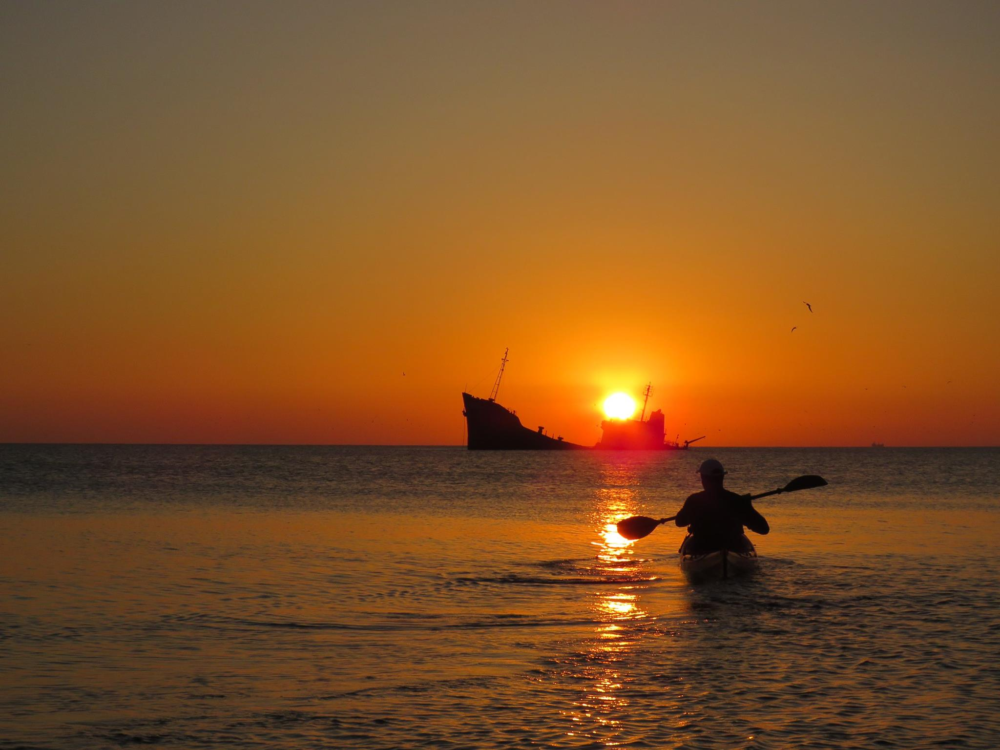

„La Sulina erau pirații din Marea Neagră care aveau tot felul de
metode de a păcălii corăbierii. Puneau vite pe malul mării, iar pe
coarnele acestora atârnau felinare. Corăbierii credeau că sunt corăbii
care stau în ancoră și care se mișcă datorită valurilor. Veneau spre
mal și în acel moment eșuau, iar pirații îi jefuiau.”
Eduard Acsente

 
